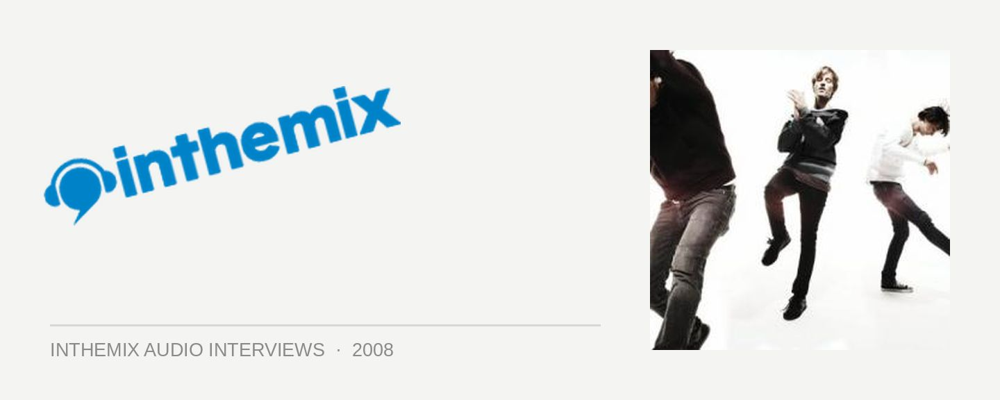

Cut Copy [Audio]: Back with a vengeance
STREAMING AUDIO INTERVIEW
Cut Copy have been one of the most respected names on the indie/electro scene since before there was even a scene in the first place, and they only further solidified this with their cracking debut Bright Like Neon Love in ’04, getting them heaps of love both here and overseas. But fans have been kept waiting for quite a while – it’s just been sooooo long between drinks. But never fear, because they’re back with their new album In Ghost Colours. And it’s a corker. But you might have already guessed we felt that way, going on the rapturous review it was awarded by ITM.
“We’re just relieved more than anything that it’s out,” the band told ITM. “Because of the delayed release of Bright Like Neon Love worldwide, it extended our touring for so long.” And if you’ve already heard singles like Hearts On Fire, Lights & Music or So Haunted, it’s the emotion-drenched pop choruses that would have probably grabbed you the most. “I think with Cut Copy, pop music is always going to be the motif that runs through the sound. But with this one we wanted to take it into a bit more a psychedelic realm. We kind of like it when pop music gets a bit weird.”
Are you loving the new album? And do you wanna see the boys bringing it in a live setting once again? You’ll have your chance when the V Festival kicks off this weekend, for what’ll be the last the last big party of the season. In anticipation of these shows, ITM’s Angus Paterson talks to Cut Copy about all things In Ghost Colours.
In Ghost Colours is out now through Modular/Universal, and you can catch the band touring as part of the V Festival at the following dates:
Mar 29 – Sydney
Mar 30 – Gold Coast
Apr 5 – Melbourne
Apr 6 – Perth
For a whole host of Cut Copy interviews, clips, DJ mixes and more, click here to check out ITM’s Artist In-depth page. The boys were also recently on tour overseas, check out their exclusive tour diary pics and while you’re at it, have a look at this clip filmed at a recent Cut Copy gig in New York…